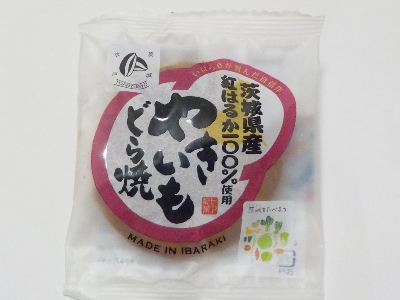

トーア乳業のやきいもどら焼き
2024/07/02

茨城県産紅はるか100%使用だそうです。きっと茨城県の紅はるかは有名なんでしょうね。
サツマイモあんではなく、白あんに焼き芋ペーストが入っていました。焼きいもらしいマイルドな甘さと、芋の皮の苦み があり、焼きいも味を忠実に作っている感じがしました。
軽くて食べやすかったです。
茨城県水戸市千波町1837-7
2024/07/02

茨城県産紅はるか100%使用だそうです。きっと茨城県の紅はるかは有名なんでしょうね。
サツマイモあんではなく、白あんに焼き芋ペーストが入っていました。焼きいもらしいマイルドな甘さと、芋の皮の苦み があり、焼きいも味を忠実に作っている感じがしました。
軽くて食べやすかったです。